决断力，是危急时刻最稀缺的品质
情境：行止告诉她毁渊之策唯一受牵连的是她自己，沈璃没有任何犹豫：「毁了墟天渊吧。」
遇到这种情况，可以这样做
- 关键时刻，想清楚代价后就要果断。
- 犹豫并不会让选择变轻松，只会让机会溜走。
- 把「值不值得」想透，然后一往无前。
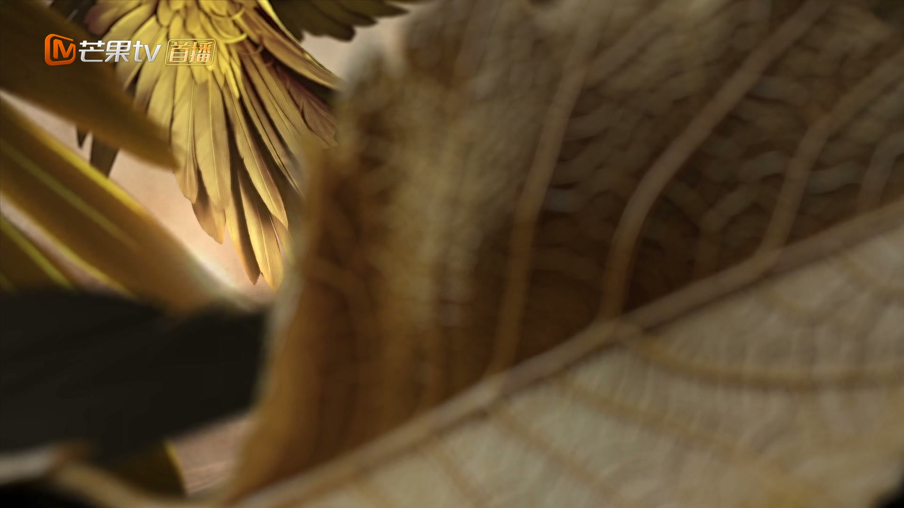
Drama Recap · 剧情图文总结
第 37 集 · 与君同归
苻生以四物代替封印，墟天渊岌岌可危。行止定下破局之策：把四处封印移至天外天相连，让墟天渊与天外天一同消失——唯一受牵连的只有沈璃。她毫不犹豫应下：「毁了墟天渊吧。」诀别之后，行止独赴天外天，燃尽最后神力。凤来寻回林间小院，得知沈璃是自己与琉羽的女儿。
被六冥操控的魑魅之王丧失理智，墟天渊战火冲天。行止向沈璃和盘托出破局之策：以四物代替的封印远不如山河柱，唯有把四处封印移至天外天相连，让墟天渊与天外天一同消失——唯一受牵连的只有沈璃。她毫不犹豫应下，两人诀别。行止独赴天外天燃尽神力，含笑而逝。
墟天渊外，魑魅之王被六冥操控、丧失理智，见人便杀。沈璃与诸将意识到必须先控制住他，不能让他滥杀无辜。沈璃亲自督战：这场生死存亡之战，退无可退——不准退一步，也不准退，不战胜便战死。
剧里的鸡毛蒜皮，往往是人生的缩影。这些情节不只是故事——当你在现实中遇到同样的处境时，它们能提醒你：先做什么、别做什么、怎么说才有效。
情境：行止告诉她毁渊之策唯一受牵连的是她自己，沈璃没有任何犹豫：「毁了墟天渊吧。」
情境：行止设计出保全三界的破局之法，却把自己和沈璃推到了必死的境地。
情境：诀别之际，行止说「与你同归是我能想到的最好的结局」，没有哭天抢地，只有平静的笃定。
情境：行止生命将尽，沈璃守在身旁，一句「我一直都很心疼你」，胜过千言万语。
情境：凤来得知沈璃是自己的女儿，明知凶多吉少，仍冲入墟天渊救她。
情境：沈璃许下第一个愿望——每个夏天都要行止帮她摘葡萄，把爱过成了具体可感的日常。
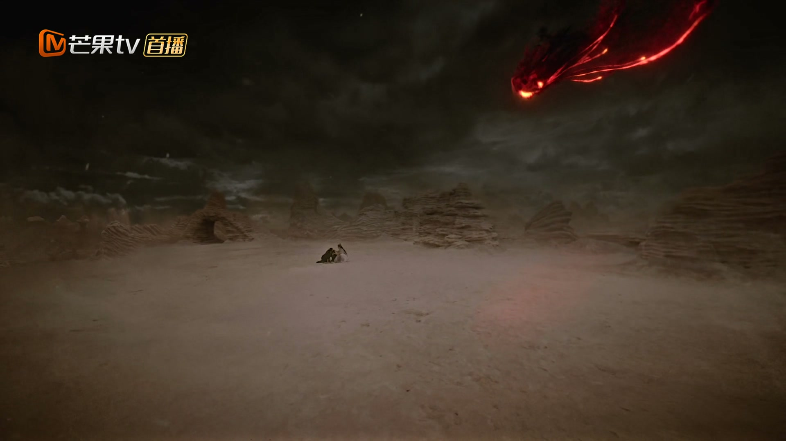
墟天渊外，魑魅之王被六冥操控，丧失理智，见人便杀。沈璃与诸将赶到，意识到必须先控制住他，不能让他滥杀无辜。
战局胶着，沈璃握紧赤羽枪，目光扫过漫天魑魅，心中已有了决断。
关键台词 · KEY QUOTES
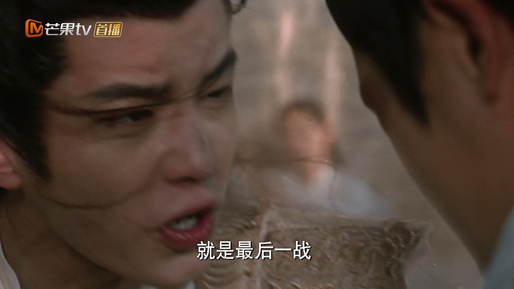
战场上有人劝沈璃暂避锋芒，她断然拒绝：这不是逃就能逃得掉的。
「不准退一步，也不准退！你这不战胜，便战死！」她立于军前，掷地有声，身后将士齐声应和。
关键台词 · KEY QUOTES
行止把沈璃叫到一旁，和盘托出破局之策：苻生以另外四物代替了墟天渊原有的封印，可这四物远比不上原来的山河柱，墟天渊只是被他勉强撑着。
「唯一可行之法，是我把四处封印带去天外天，使之与天外天相连。届时墟天渊与天外天一同消失——与仙界无涉，与灵界无憾。」
行止停顿片刻，终于说出最关键的一句：「唯一会受牵连的，只有你。」
关键台词 · KEY QUOTES
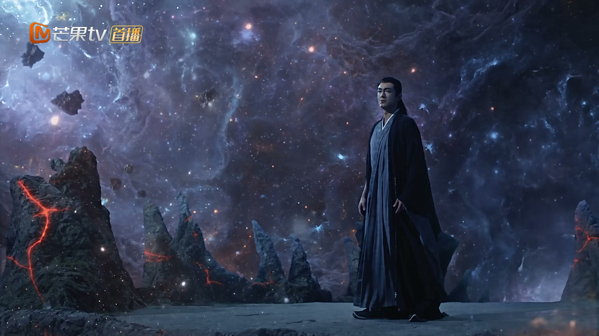
沈璃看着他，目光平静：「你知道我会怎么选的。」
行止知道劝不住她，低声说出那句话：「别犹豫了，毁了墟天渊吧。」他心疼地补了一句：「好歹也是你自己的性命，你怎么都不犹豫一下就答应了？」
沈璃迎上他的目光：「犹豫，不是我的性格。」
关键台词 · KEY QUOTES
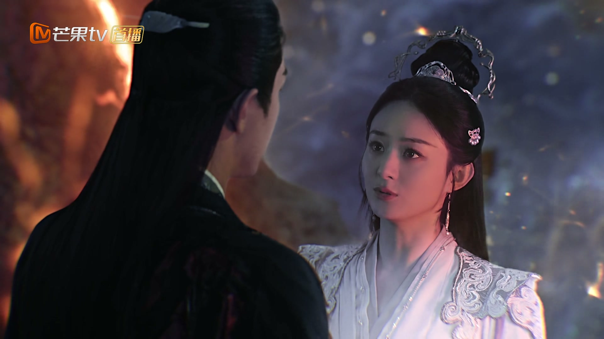
沈璃自嘲：「抱歉，你千辛万苦救回来的这条性命，又要让我给玩没了。」行止摇头：等我处置好那四个封印后，我便回来陪你。
「没有你胜利的世界，我已经不敢想象。如今与你同归，是我能想到的最好的结局。」行止轻声说，眸中却有一丝怕意，「我只是怕，到最后连同归也不能。」
沈璃握住他的手：「不会的。」
关键台词 · KEY QUOTES
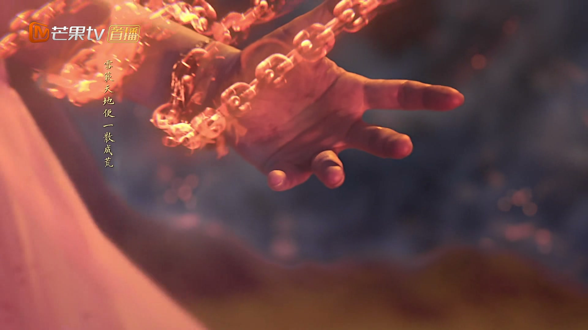
行止嘱托众神君：我会离开此处一阵，神力或许会解除墟天渊外这个临时结界，怕是要劳烦各位支撑一阵。
诸神君齐声应诺：必不负神君所托！沈璃望着他远去的背影，把所有的牵挂都压进了心里。
关键台词 · KEY QUOTES
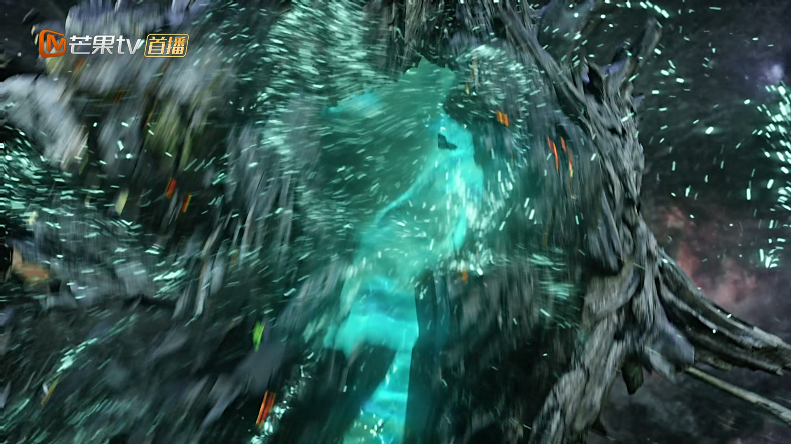
天外天中，行止的神力已退化到极点。他自嘲：看来没有此一走，我也快走到尽头了。
他拼尽最后一丝力气，将四处封印与天外天相连——「这墟天渊……终于连在一起了。」
天地轰鸣，墟天渊与天外天开始一同崩塌，他缓缓闭上眼睛，笑着等待终结。
关键台词 · KEY QUOTES
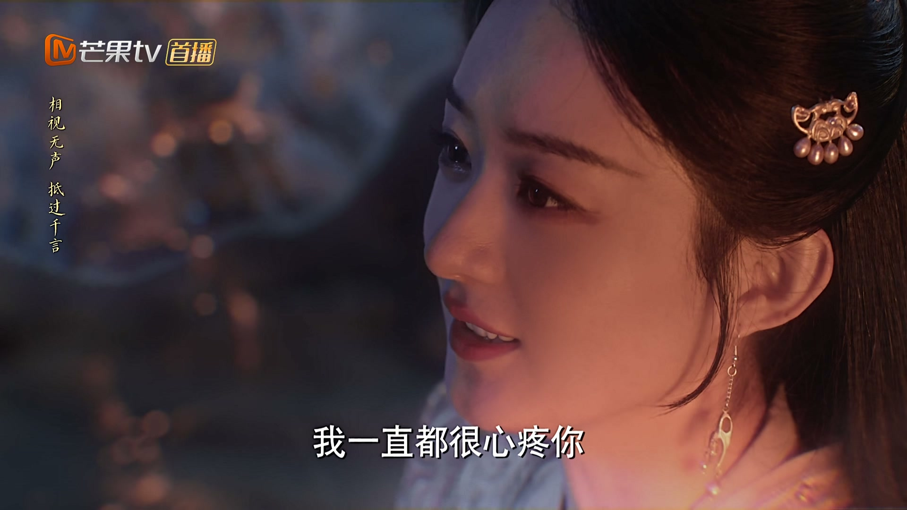
生命将尽，行止做了一个梦，醒来便看见沈璃。「做了个美梦，醒来便能看见你，实在是再好不过。」
沈璃心疼地责怪他：「就这么眼睁睁地看着自己死去，行止，你对自己也太狠了。」行止轻声道歉：抱歉，让你一起害怕。
「谁要你道歉了，我是在心疼你。」「被人心疼的感觉，真的还不错吗？」「我一直都很心疼你。」
话音落下，行止缓缓闭上眼，含笑而逝。沈璃将他抱在怀中，久久不肯松手。
关键台词 · KEY QUOTES
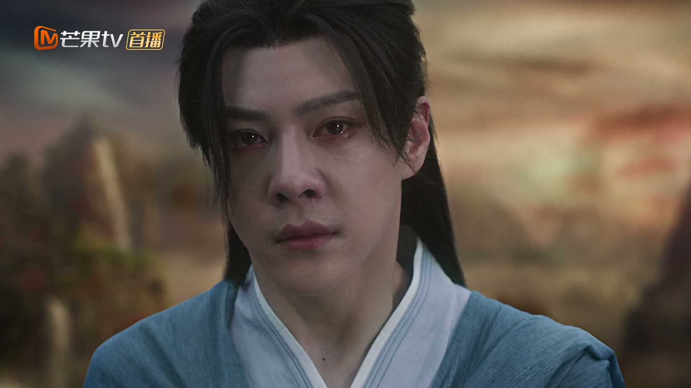
凤来破渊而出，回到林间小院，一遍遍唤着琉羽的名字。可林间小院早已物是人非。
沈木月告诉他：琉羽早已亡于墟天渊前，千年时光，连她的气息都寻不到了。
「她为你留下了一个女儿，名为沈璃。」凤来怔在原地，缓缓问出那句话：「她……喜欢这个孩子吗？」沈木月答：喜欢，比喜欢自己的生命更喜欢。
关键台词 · KEY QUOTES
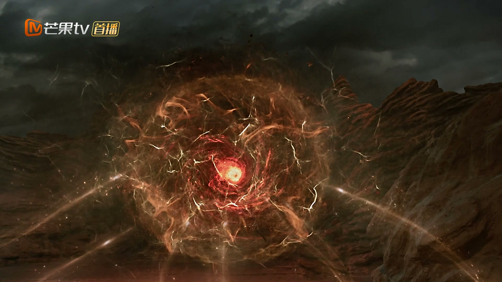
沈木月劝凤来：你此去必是凶多吉少。凤来却道：我这么做，是为了刘雨，也是为了雨儿。抱歉，我还是要救阿璃。
他冲入墟天渊。正在苦战的众人发现有人相助，墟天渊守住了。
沈璃脱困，浑身狼狈。她看着眼前比自己还狼狈的身影，轻声笑骂：「我们俩可真狼狈。虽然你是上古的神，但我觉得你还是差了点。」
关键台词 · KEY QUOTES
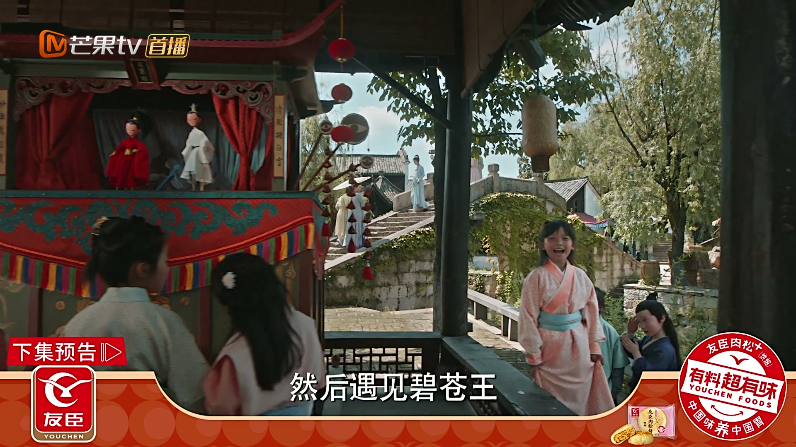
幻境之中，行止的身影再现。沈璃开口：「你好像还欠我两个愿望。」
「哪两个愿望？」「第一个愿望——就是以后的每个夏天，你都要帮我摘葡萄。」
行止笑着应下，她却不提第二个：「这第二个愿望……」话音未尽，画面渐渐模糊。
关键台词 · KEY QUOTES
战场上誓死不退，闻策后毫不犹豫应下毁渊之局；送走行止后镇守墟天渊，最终在父亲凤来的相助下脱困。
定下「墟天渊与天外天同灭」的破局之策，独赴天外天燃尽神力，与沈璃诀别后含笑而逝。
破渊而出寻回林间小院，得知沈璃是女儿后冲入墟天渊救她，以身为盾护住血脉。
在林间小院向凤来道出琉羽之死与沈璃的身世，劝他莫要赴死，最终含泪送他救女。
幕后操控魑魅之王丧失理智，成为墟天渊决战真正的操纵者。
墟天渊外与众神君一同支撑临时结界，誓死不负神君所托。
墟天渊外与众神君一同守御结界，见证行止最后的托付。
明知必死之局，沈璃毫不犹豫应下——一句「犹豫，不是我的性格」，胜过千军万马。
「与你同归，是我能想到的最好的结局。」明知诀别，却说得温柔笃定，是全剧最催泪的一幕。
燃尽最后神力将墟天渊与天外天相连，与沈璃相守最后一刻，含笑而逝。
「她为你留下了一个女儿，名为沈璃。」千年后，凤来终于知道自己并非孤身一人。
幻境之中，沈璃讨还第一个愿望——「每个夏天，你都要帮我摘葡萄」，温柔中藏着彻骨的思念。
上古诸神以最后的力量从天道手中留下行止——他的死，或许并不是终点。
沈璃讨还两个愿望，第一个已许下，第二个却留白，为最终的圆满埋下伏笔。
凤来为琉羽而活，也终将为女儿沈璃赴死，父女二人殊途同归。
上古神明最后的据点与最大劫难一同消失，天道与新秩序的隐喻贯穿始终。
火之封印的传承，让沈璃与父亲凤来命运交织——这一战，她接过了父亲的担子。